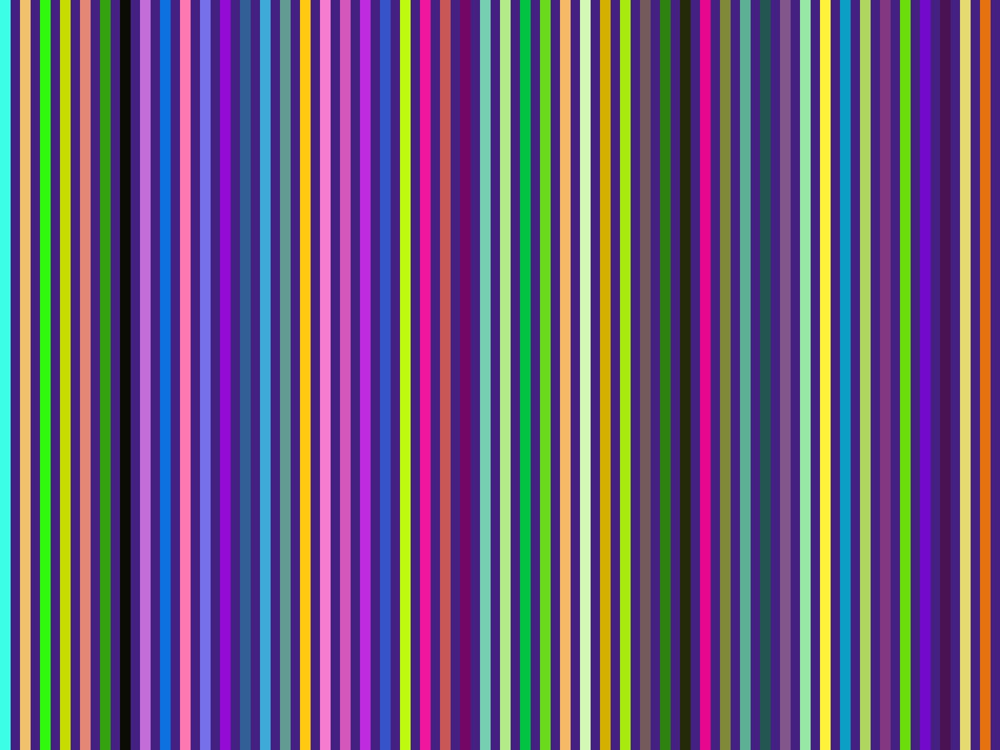
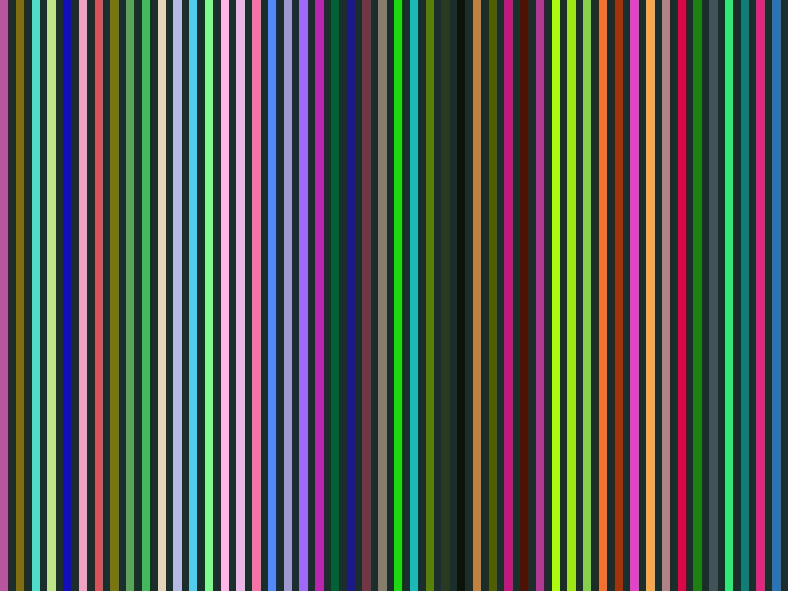
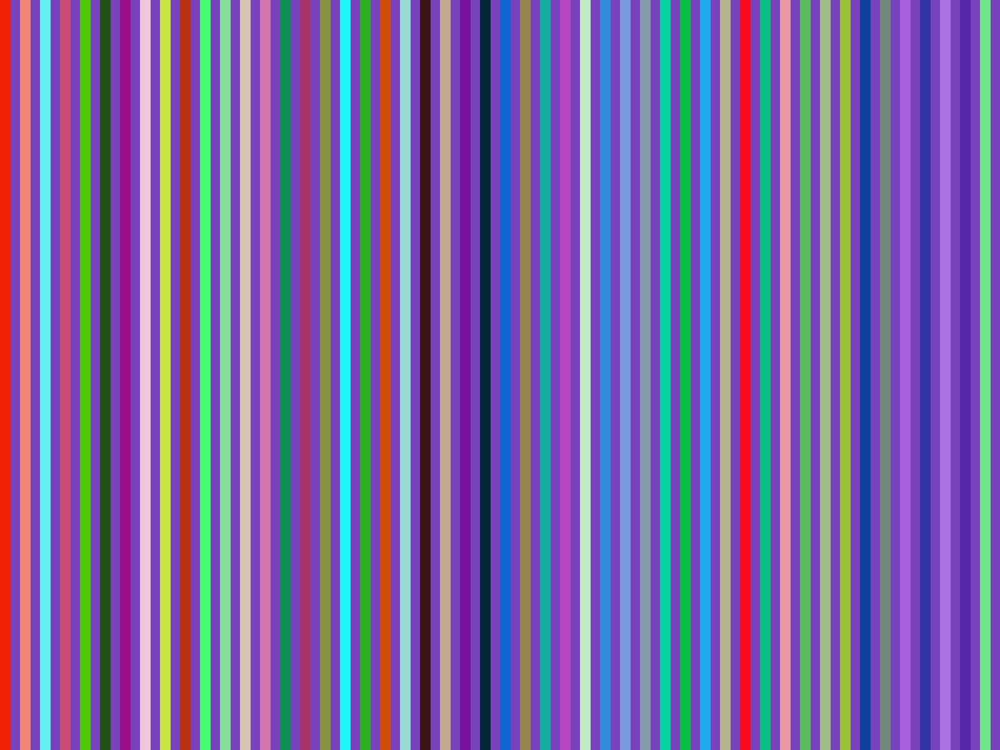

Included resources (in document order)
- 1)
/assets/jquery.js(script) - 2)
/assets/underscore.js(script) - 3)
/assets/doctools.js(script) - 4)
/assets/theme.css(stylesheet) - 5)
/assets/theme.js(script, added after CSS)
Suggested sizes to make scheduling visible: scripts ≈ 300–800 KB, CSS ≈ 100–300 KB. Any content works; bigger files make the timing clearer.
Optional: extra payload (images) to visualize scheduling
Include a few large images so your server opens multiple HTTP/2 streams. These are just placeholders; point to real images on your origin.
  